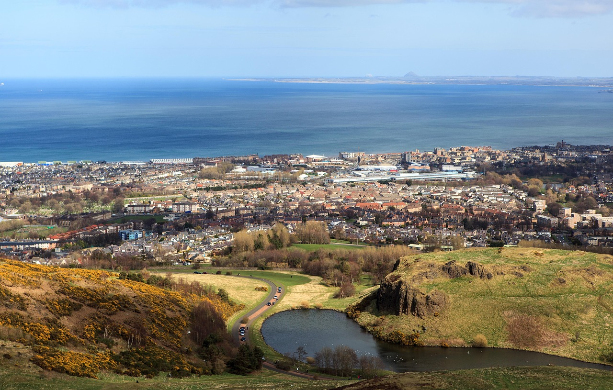

Descubre Arthur’s Seat
Una experiencia natural en el corazón de Edimburgo
¿Qué es Arthur’s Seat?
Arthur’s Seat es una antigua formación volcánica situada en Holyrood Park, ofreciendo una de las mejores vistas panorámicas de la ciudad de Edimburgo.
Ver ubicación